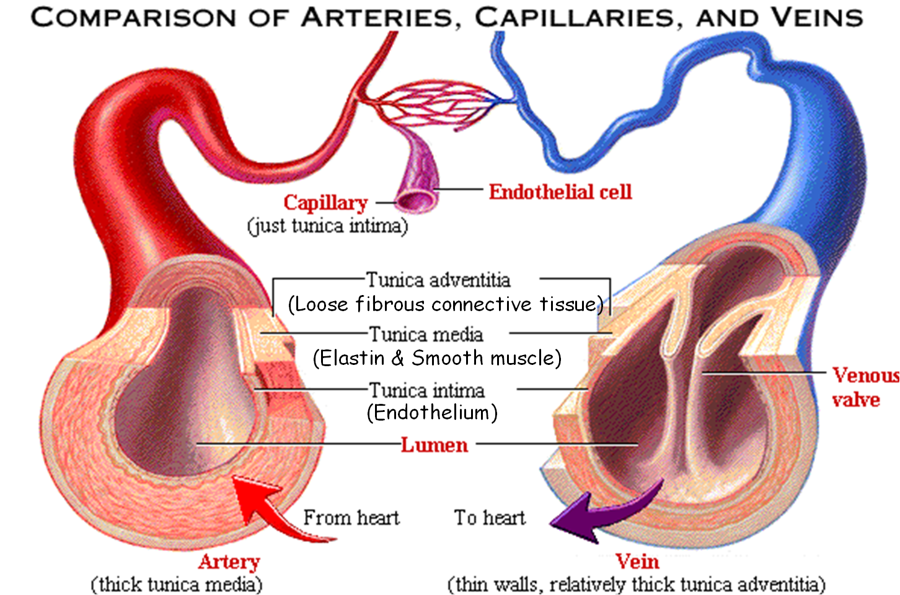

The responsibility of the circulatory system is to keep flow of blood, nutrients, hormones, oxygen, and other gases to and from the cells. With out it, the body would be defendless, lacking homeostasis, and not having oxygen. It is very pivotal to all of us. The functions divide furthermore by organs explained by the next chapter.
The circulatory has one large organ and other small ones. The large one is the pumper, the heart. The heart's function is to pump blood from the lungs to the rest of your body. It is made of an involuntary muscle called the cardiac muscle. It is the only muscle that you cannot control it, hence the name in voluntary. It has four chambers: left ventricle, right ventricle, left atrium, and the right atrium. A ventricle is on the same side as the atrium. 1*Oxygen-rich blood comes from the lungs via the pulmonary veins to the left atrium. Passes the bicuspid/mitral valve to the left ventricle.*1 2* It then goes through the Aortic valve through the Aorta*2 and finally to the rest of the body. 1*Then, the oxygen-poor blood comes from the inferior and superior vena cava to the right atrium. It gets pushed through the tricuspid valve into the right ventricle*1. 2*After, the blood goes through the pulmonary valve*2. And finally to the lungs to get re-oxygenated. That is how much happens in such a 1-second breath. The hearth functions in a LUB/DUB sound. The LUB goes through 1*1 and the DUB through 2*2. The beating is controlled by nerves and 'nerve stations' in differents parts of the heart. One called the SA or sinoatrial node and the other one called the AV or atrioventricular node. They are located in the right atrium, sending messages through the septum to the apex and to the ventricles via the nerves.
There are three major types of blood tubes or vessels. The first one is an artery. It contains oxygenated blood going to the body. The next type is the vein. It holds de-oxygenated blood going back to the heart. There are two minor types. One sprouting from a vein and the other one from an artery. They are the venule and the arteriole. The final one are the capillaries with a very complex network. It's the transfering of arteries (oxygenated blood) to veins (de-oxygenated blood). They are really thin that mere one [red] blood cell can pass through. Venules and arterioles both connect via the capillaries. Each vessel has different 'walls'; having same number of walls, yet one is thicker than the other. Going from external to internal, the walls of a vein are: fibrous connective tissue (Tunica adventitia), external elastic tissue, smooth muscle (Tunica media), and endothelium (Tunica intima). It also contain a valve so blood doesn't runs backwards, since it travels anti-gravity motion. The walls for the artery are the same names but the difference is the Tunica media in the artery. It's thicker than the vein, therefore, the internal elastic tissue and the Tunica intima are narrower than the vein. **Note** The vessels closer to the heart are way thicker than the normal vessels. The capillaries only contain one layer; the endothelial cells or also called Tunica Intima.
The blood is not only made up of red blood cells but it also contains other various types of components. They are: red blood cells (also called Erythrocytes), white blood cells ( Leukocytes), platelets, plasma, fibrinogen, and other more tiny components. There are different types of leukocytes including monophils, t-cells, basophils, neutrophils, monocytes, phagocytes, and many more. They are included in the immune system or lymphatic system. Most of the components are made in the bone marrow inside the bones. The erythrocytes are for carrying O2 using hemoglobin. Hemoglobin consists of 4 parts. 2 α globin and 2 β globin. Each globin contains a heme group which carries an Fe atom. There are thousands of hemoglobin in a single erythrocyte. Leukocytes defend the body, plasma is just liquid with solutes and proteins, platelets are for clogging any trespass or hole in the vessels along with fibrinogen which form a net so the platelets can stick to it.
The circulatory doesn't works alone, it has a bond between other systems. Such as the respiratory, lymphatic, digestive, excretory, nervous, skeletal; basically all of the systems. It primarily works with the repiratory and the lymphatic systems. The circulatory conects to the lungs by the alveoli inside the lungs. There, the de-oxygenated bood in the capillaries drops off CO2 and collects O2 by the protein, hemoglobin. It can be described more in the respiratory system page here. It also works with the lymphatic system. The lymphatic is the defending system. It contains leukocytes and lymph (a liquid). The leukocytes from the circulatory, when in emergency, go toward the "damaged area" via the lymph vessels. So it is another important system to the circulatory. It doesn't have major impact of other body systems but they are nessesary.
According to the American Heart Association,
cardiovascular disease is the leading cause of death in the US. One of the most common diseases is arterioclerosis,
in which the lipid deposits in the arteries causes the walls to stiffen and thicken the walls.
This can restrict blood flow or in severe cases stop it all together, resulting in a heart attack, or stroke.
Another disease, hypertension -commonly called high blood pressure- causes the heart to work harder and can lead to such complications as a heart attack,
a stroke, or a kidney failure.
An aortic aneurysm occurs when the aorta is damaged and starts to bulge or eventually tear, which can cause severe internal bleeding.
This weakeness can be present at birth or the result of atherosclerosis, obesity, high blood pressure or as well as a combination of all these conditions.
Peripheral arterial disease (a.k.a PAD) usually involves areas of narrowing or blockage within an artery.
In addition, chronic venous insufficiency (a.k.a CVI) involves areas reflux (or backward flow) within the superficial veins of the lower extremities.
GarciaStudios
© 2017 All Rights Reserved
Copyright Disclaimer Under Section 107 of the Copyright Act of 1976, allowance is made for
"fair use"
for purposes such as criticism, comment,
news, reporting, teaching, scholarship, and research. Fair Use is a use permitted by copyright statue that might
otherwise be infringing.